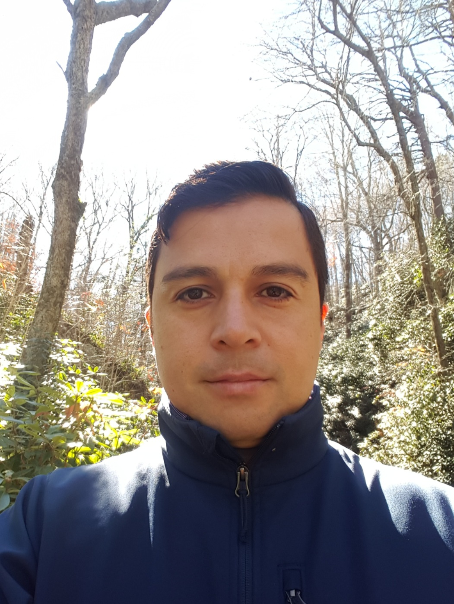

Associate Professor
Department of Statistics
Florida State University

I am an associate professor in the Department of Statistics at Florida State University. My research interests focus on developing and studying methodological procedures in statistical science that incorporate flexible Bayesian modeling and approaches for data privacy. My methodological research involves single and regression density estimation, hypothesis testing, massive data, probabilistic approaches for complex data, differentially private procedures, and synthetic data generators.
I earned my bachelor's degree in statistics from the School of Statistics at Universidad del Valle in Colombia. I then moved to Chile, where I completed my Ph.D. in statistics and remained for a postdoctoral position in the Department of Statistics at Pontificia Universidad Católica de Chile. I subsequently joined the Department of Statistical Science at Duke University as a postdoctoral researcher before coming to Florida State University.